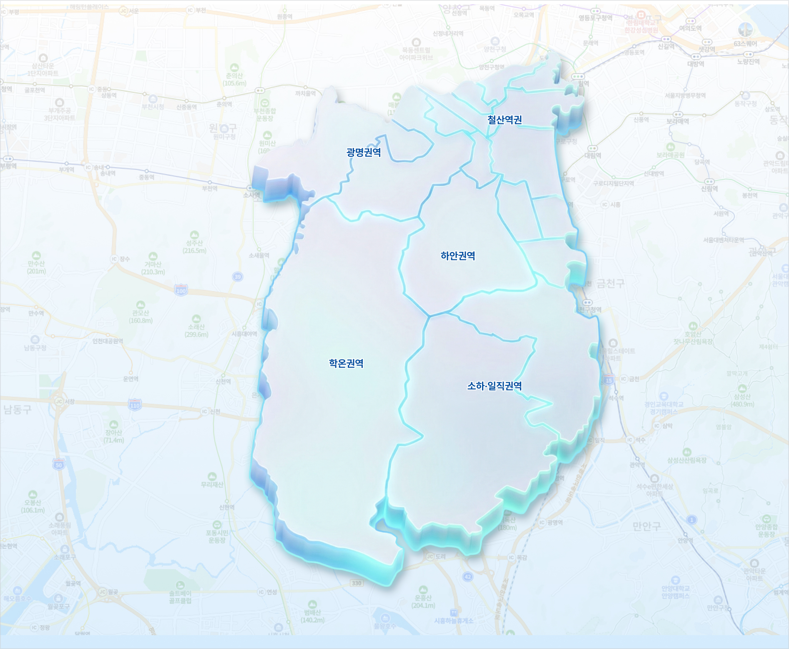
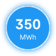

12
18
21
16

하안권역 에너지 집계
신재생 설비21 개소
총 발전량260 MWh
전월 대비+8.2 %
소하권역 에너지 집계
신재생 설비34 개소
총 발전량480 MWh
전월 대비+11.6 %
신재생 에너지 자원 발전소
현재출력168 kW
누적발전량1,248 MWh
가동률92.4 %
광명역
1번 정류점
(광명사거리)
친환경 DRT 운영 거점
운행 차량23 대
전월 대비+12.3 %
금일 탑승건수48 건
2번 정류점
(철산역)
친환경 DRT 운영 거점
운행 차량18 대
전월 대비+8.4 %
금일 탑승건수37 건
3번 정류점
(하안사거리)
친환경 DRT 운영 거점
운행 차량31 대
전월 대비+5.2 %
금일 탑승건수63 건
4번 정류점
(학온동)
친환경 DRT 운영 거점
운행 차량14 대
전월 대비-2.1 %
금일 탑승건수22 건
5번 정류점
(소하동)
친환경 DRT 운영 거점
운행 차량27 대
전월 대비+11.8 %
금일 탑승건수51 건
6번 정류점
(일직동)
친환경 DRT 운영 거점
운행 차량19 대
전월 대비+6.7 %
금일 탑승건수39 건
광명역 KTX
침수 경보 1건
침수홍수 경보 현황
경보 건수1 건
경보 유형침수 경보
최근 발생13:42
안전센서
광명권역 환경 센서
PM1042 ㎍/m³
PM2.521 ㎍/m³
관측시각15:07
미세먼지 보통
하안권역 대기 현황
PM1038 ㎍/m³
PM2.518 ㎍/m³
관측시각15:07
대기질 모니터링 센서
PM1022 ㎍/m³
풍향/풍속남서 3 m/s
관측시각15:07
침수주의
침수 위험 경보
위험 등급주의
맨홀 수위43 cm
관측시각14:55
침수예측
침수 예측 센서
수위보통
유속0.8 m/s
관측시각15:07
침수예측
침수홍수 관제 지점
수위정상
위험알림0 건
관측시각15:07
주의구역
소하권역 주의 구역
상태주의
위험 요소침수위험
수위 센서3 개소
데이터 연계
32
건
데이터 연계 현황
연계 건수32 건
연계 시스템7 개소
정상률98.5 %
API
8
종
개방 API 현황
API 종류7 종
일 호출 수4,872 회
응답 성공률99.2 %
수집데이터
128
건
데이터 수집 현황
수집 건수128 건
실시간 수집72 건
수집 성공률96.8 %
MRV
12
건
MRV 측정·보고·검증
검증 건수12 건
완료 건수9 건
처리중3 건
이노베이션센터
광명 이노베이션센터
연계 데이터32 건
API 종류7 종
데이터 정상률98.5 %
통합플랫폼
스마트데이터 통합플랫폼
처리 건수2,456 건/일
연계 시스템7 개소
광명역